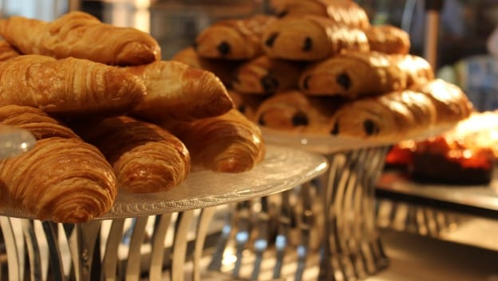

Welcome to the Greek Cafe! We are a new establishment started January 1, 2020. We’re not just passionate purveyors of coffee, but everything else that goes with a full and rewarding coffeehouse experience. We also offer a selection of premium teas, fine pastries and other delectable treats to please the taste buds. And the music you hear in store is chosen for its artistry and appeal. It’s not unusual to see people coming to Greek Cafe to chat, meet up or even work. We’re a neighborhood gathering place, a part of the daily routine – and we couldn’t be happier about it. Get to know us and you’ll see: we are so much more than what we brew. We make sure everything we do is through the lens of humanity – from our commitment to the highest quality coffee in the world, to the way we engage with our customers and communities to do business responsibly. At the heart of our business, we seek to inspire and nurture the human spirit - understanding that each person brings a distinct life experience to the table. Our partners are diverse not only in gender, race, ethnicity, sexual orientation, disability, religion and age, but also in cultural backgrounds, life experiences, thoughts and ideas. Embracing diversity only enhances our work culture, it also drives our business success. It is the inclusion of these diverse experiences and perspectives that create a culture of empowerment, one that fosters innovation, economic growth and new ideas.